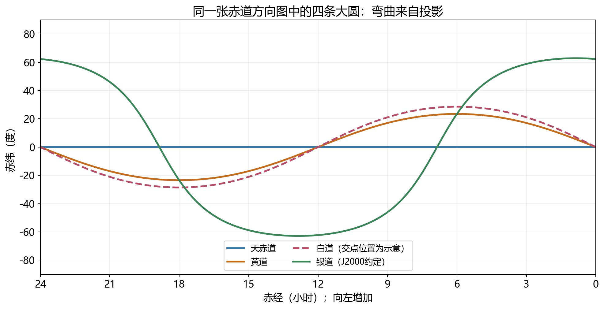
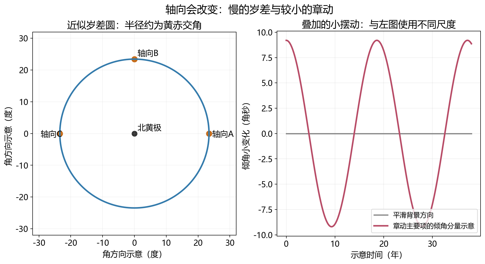
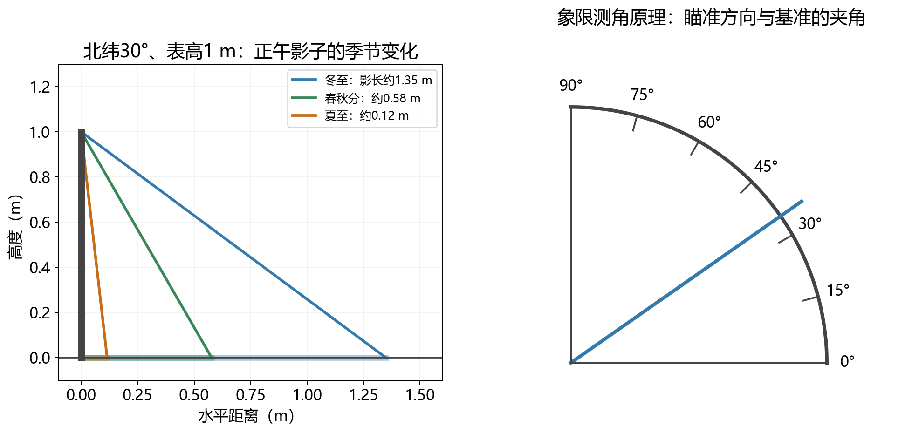
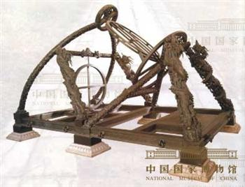
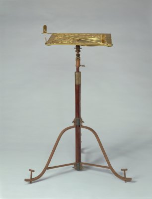

抬头看星空，眼睛看见的是亮点与明暗不均的银河，看不见天赤道，也看不见黄道。可在星图、历书和古代仪器上，几条没有实体的线却反复出现。它们有什么用？如果只是为了把天空分成区域，任意画几条线似乎都行；为什么恰好要把地球赤道、日月运动与银河分别搬上天空？
答案藏在测量之中。天文学首先要记录“什么东西在什么时候、从什么地方看，位于哪个方向”。一条参照线若与地球自转相连，就能帮助解释每天的升落；若与公转相连，就能组织太阳的周年位置和季节；若与月球轨道相连，就能说明日月食为什么不每月发生。参照系选择得好，复杂的变化会显出结构。不过这些结构并非永远不变：地轴会缓慢改变指向，古代仪器与现代坐标也必须面对同一个问题——我们如何知道自己的尺子没有转动？
地球近似绕一根穿过南北极的轴自转。与这根轴垂直、经过地心的平面，是赤道面。把平面向外延伸，让它与代表所有方向的天球相交，得到天赤道。过球心的平面切出的大圆把球面分成两个半球，因此天赤道给出了天空的南北分界；地轴向两端延伸，则指向北天极与南天极。轴、平面和大圆是一套互相配合的几何定义。赤道参照与天球坐标
这里要区分一条空间中的线与一个方向。我们不需要真的把地轴延伸到某颗恒星那里，所谓“北天极”就是沿地轴向北看去的方向。在地球转动的近似下，恒星相对于这根轴的夹角基本保持，所以星星在天球上每天走的是绕天极的圆。赤纬是天体方向与赤道面的夹角，北正南负：赤纬为零的星位于天赤道，赤纬为正的星在北侧。若一颗星的赤纬为70°，它离北天极是20°，日周轨迹便是围绕北天极的小圆。
天赤道也不是当地的地平线。地平面由观察地点的铅直方向定义：它垂直于当地的竖直线。赤道面由整颗地球的自转轴定义，换一座城市并不会给地球换一根轴。站在北极，天赤道大致落在地平线上；站在赤道，天赤道穿过天顶，北南天极则落在北南地平附近；在北纬30°，北天极高出北方地平约30°，天赤道上中天时位于南方，高度约60°。同一套天空骨架，换一个观察地点，便有不同的倾斜姿态。
这种区分还决定了仪器如何工作。若望远镜只绕水平轴和竖直轴转动，两个轴都与本地地平有关，跟踪一颗星时通常需要同时改变两个方向。若让一根机械转轴平行地轴，另一根垂直于它，就建立了赤道式装置；在理想模型中，维持恒星跟踪主要依靠绕极轴匀速转动。地球自转怎样改变天空，仪器便用相应的转动补偿它。参照系在这里不是书上的术语，而是把自然运动变成机械结构的方式。赤道与地平坐标的测量关系
地球在绕太阳公转时，从太阳看去的地球方向不断改变；反过来，地球上看到的太阳也沿恒星背景移动。把太阳一年中经过的方向连起来，近似得到一个大圆，叫黄道。它与地球绕日轨道面对应。太阳每天东升西落主要来自地球自转，太阳每年在恒星背景中走一圈来自公转，两种运动叠加在同一个天空中，却不能用同一个原因解释。黄道的定义
地球的赤道面没有与公转轨道面重合。两者约23.4°的夹角叫黄赤交角，也就是地轴相对轨道面法线的倾角。所谓“地轴倾斜23.4°”，要明确是相对法线而言；若量地轴与轨道面本身的夹角，则约为66.6°。参照对象少说一句，便会把两组看似矛盾、实际互补的数字混在一起。
因为两个平面相交，天赤道与黄道在天球上有两个交点。太阳由南向北穿过天赤道的交点对应春分，由北向南穿过的交点对应秋分。这些名字按北半球季节命名，南半球在同一天迎来相反季节。两次相交之间，太阳向赤道北侧或南侧偏离，在至日附近达到最大赤纬。第05讲说的日照变化，在这张方向图中便表现为太阳赤纬在一年中起伏。
还可以把这个图像写成一个简单关系。以春分点为起点，沿黄道量太阳的黄经 ；以天赤道为零量太阳的赤纬 ；令黄赤交角为 。将黄道面中的单位方向转过一个倾角，北向分量就是 ，于是
春分时 ，太阳赤纬为零；夏至时 ，赤纬为 ；秋分时 ，再次为零；冬至时 ，赤纬为 。这个推导忽略轨道面和地轴方向的细小变化，适合解释一年的季节几何。它并未说太阳黄经每天匀速增加：椭圆轨道使公转速度改变，所以各段节气的时间长度并不完全一样。黄经、赤纬与季节几何
黄道之所以好用，还因为太阳系不是随机摆放的一群轨道。主要行星绕日轨道总体接近同一平面，因此它们在地球天空中多出现在黄道附近。这里的“附近”有具体宽度，也有随行星变化的偏离，不能把黄道画成所有行星必须严格踩着的单线。水星轨道倾角比一些主要行星大，月球又有自己的轨道面；太阳系形成时的共同旋转与后来动力学演化，提供了“相近而不完全相同”的自然背景。
月球绕地球运动，把月球在天球上的路径近似看作一个大圆，称为白道。月球轨道面相对黄道面的平均倾角约5.1°，所以白道与黄道相交，却不重合。月球相对恒星背景绕行一周约27.3日，而新月到下一次新月约29.5日；前者追踪方向，后者追踪日地月的相对相位。这也解释了为什么“月球沿白道走一圈”和“经历一轮月相”不能简单说成同一个月。月球轨道与食的几何
新月时，月球在太阳附近的方向，但“附近”不等于同一条视线。若新月发生在白道远离黄道的部分，月球会从太阳北侧或南侧经过，地球上便看不到日食。满月时，月球处在与太阳大致相反的方向；若它离黄道较远，又会从地球影锥上方或下方通过，不发生月食。要出现食，日月相位合适之外，月球还必须接近白道与黄道的交点。
五度似乎不大，为什么效果这么明显？太阳与月球在地球天空中的视直径都约半度，因此五度约相当于十个太阳直径。月球即使处于新月，仍然可以在天空中错开很多个太阳的宽度。倾角小，是相对一个360°的整圈而言；倾角大，是相对遮掩所要求的半度尺度而言。同一个数字只有与问题的特征尺度比较，才显示其物理意义。
白道也不是钉死在天球上的一条线。太阳的引力扰动使月球轨道交点沿黄道缓慢退行，约18.6年转一圈。于是月球轨道面相对于地球赤道面的夹角也改变，月球能够达到的最大南北赤纬随之变化。简化几何中，最大偏离可以接近 ，或接近 。真实月球轨道还有其他扰动，需要历表才能精确预报，图中的白道只能代表选定构型。交点运动与主要周期
银河在暗夜中看起来像一条不规则的亮带，因为太阳位于银河系的盘状结构内部，沿盘面望去，视线穿过较长的恒星和星际物质分布。银道面是为描述这种结构约定的参照平面，银道就是银纬为零的大圆。它有银河系盘的物理背景，却不等于照片中亮带的每一条边缘。恒星密度不均、星际尘埃遮挡和观测波段都会改变银河的外观。银道坐标的定义
地球的赤道面取决于地轴，黄道面取决于地球公转轨道，银道面取决于我们对银河系的坐标约定；它们没有必须平行的理由。图中的银道相对于天赤道倾斜得很大，用常用的J2000方向关系表示，约为62.9°。这不是说银河盘相对自己的赤道倾斜，而是说两套来自不同系统的参照平面在天空中成这个角度。太阳系只是银河系中的一个局部系统，它的轨道结构不会自动与整座银河的结构对齐。本图所用银极方向
银道坐标用银经 与银纬 指明方向，朝银心附近规定银经零点，沿银道展开整圈，向北银极为正银纬。这里还有一个容易忽略的区别：讨论天空方向时，坐标原点可以放在太阳系附近，银心是一个特定方向；讨论整个银河系的三维轨道时，常要改用以银心为原点的坐标。两个系统都叫“银河相关坐标”，原点却不同。把朝向银河中心看去与把原点搬到银河中心混同，会令距离和速度都失去明确含义。

图1：依据平面几何计算的方向图，SVG与绘图源保存在同目录及第05讲素材目录。黄赤交角取23.44°；白道倾角取5.145°，交点位置人为选择，只示范两轨道面不重合；银道采用常用J2000银极方向。横轴是赤经，纵轴是赤纬，所以球面大圆可以投影成弯曲线。线的横纵幅度不能直接当作任意两个面的夹角，也不代表天体距离。
四条线放在一起，真正有用的不是记住四个颜色，而是知道每条线服务哪个问题：天赤道连接自转和日周运动，黄道连接公转和季节，白道连接月球轨道和食，银道组织银河系对象的分布。可以随时换一套坐标表达同一个天体，天体不会因此改变位置；改变的是我们描述它的尺子。
过去两讲把地轴看作一年内大致保持同向，这是解释季节与星空运动的可靠近似。把时间拉长到数百年、数千年，却会发现天极方向不断改变。地球不是完美球体，自转使赤道附近略微隆起。太阳与月球引力对这个赤道隆起施加力矩，改变地球自转角动量的方向，使地轴产生长期的进动，通常称地轴岁差。岁差的物理来源
这里的作用不是把地球硬拉成南北摇晃的玩具。转动物体的角动量沿自转轴，外力矩可以改变它的方向；方向变化并不要求物体停止自转。高速旋转的陀螺受重力矩后，轴端绕圈的现象提供了一种直观类比。不过地球受力、自转结构与陀螺支点并不一样，类比只帮助理解“有力矩时，转轴方向可以缓慢转动”，不能拿陀螺摩擦减速代替地球的动力学。
在简单模型里，地轴端绕轨道面法线转过一个大圈，北天极便绕北黄极走一条半径约23.4°的近似圆，周期约26000年。这不是26年，也不是地球每隔26000年绕太阳多走一圈，而是自转轴指向空间方向的长期变化。太阳、月球和其他天体的作用以及轨道面本身的变化，使真实运动比一个完美圆更复杂；“26000年”适合把握量级，不是精密历算的恒定周期。
北极星因而只是在当前时代靠近北天极，并非宇宙指定的永久路标。天极经过恒星背景中的不同位置，不同时代便可能由不同的近极亮星发挥指北作用。有些年代甚至没有同样醒目的星恰好位于近极区域。古代记录中的“帝星”“北辰”等名称还带有星官和文化语境，不能把任何一个名称自动等同于几何极点，更不能凭一句题干确定某颗星在某年“精确落在极点”。这种历史身份需要对应年代与文本的独立证据。
岁差也移动天赤道与黄道的交点。因此若以春分点作为赤经零点，恒星自身完全不动，它的坐标仍可能随参照系缓慢变化。这就是星表必须说明历元或参考框架的重要原因之一。读到J2000.0，不只是读到出版年份，而是在得知坐标如何被定义。现代常用的ICRS以遥远河外天体建立方向基准，尽量避免把会进动的地球赤道当作永远固定的空间框架；需要当天的地平指向时，再把这个框架转换到地球当时的姿态。现代空间参考框架
月球轨道相对黄道倾斜，交点又在移动，施加在地球赤道隆起上的力矩便不是严格恒定的。因此除了长期、平滑的岁差，还叠加许多较小的周期变化，称为章动。章动不是北极星在“晃”，而是我们使用的地球自转轴方向在较短时间尺度上有细微摆动。主要长周期项约18.6年，与月球轨道交点的退行周期相关；实际理论还含许多周期项。章动的大小与周期
角秒尺度能帮助分清它与岁差。1°等于3600角秒，主要章动项在黄赤交角方向的振幅约9.2角秒，也就是约0.0026°。以肉眼看，它远小于月球约0.5°的视直径；对精密测角，却大得不能忽略。地面上长为一米的尺子，若方向改变一个角秒，端点横向变化约五微米；天空中很小的角变化，在精密方向测量中同样会成为必须建模的系统量。

图2：左图是从北黄极附近看去的方向示意，不标历史年份，也不由图中A、B、C判断实际北极星身份。右图仅画振幅9.2角秒、周期18.6年的单个余弦项，相位任意，不是可用于预报的完整章动历表。两图尺度不同；依据USNO Circular 179的量级与主要项制作。
此外，自转轴相对于地球表面本身也有小变化，称为极移；地球一天的实际长度也有微小变化。它们与地轴相对于遥远宇宙的岁差、章动属于不同的比较关系。要说“轴动了”，必须回答相对什么动：相对于地球地壳，还是相对于空间方向？现代国际地球自转与参考系服务组织用观测提供地球定向参数，把模型与真实地球之间的差异继续校正。因此一张星图上的方向，最终指向地面仪器时，经过的是一个随时间更新的测量体系。真实地球定向观测
在没有电子探测器和精密钟表的时代，最容易取得的天文证据之一，是太阳投下的影子。竖起一根表，在地面上沿影子方向读长度，就把一个天空角度转换成地面距离。表和读影刻度共同构成圭表的基本工作方式。仪器简朴，原理并不浅：它同时依赖竖直、水平、方位、时间和太阳位置，任意一个环节不清楚，数据就可能失去意义。测影的几何背景
设表高为 ，太阳高度为 ，忽略折射，且表竖直、地面水平。表与影子形成直角三角形，正午影长 满足
在北纬30°，太阳上中天高度在冬至约36.56°，春秋分约60°，夏至约83.44°。对于一米高的表，影长依次约为1.35米、0.58米和0.12米。影子在地面上留下了地轴倾斜的证据。只要当地太阳正午总在天顶南侧，影子便向北；到了热带地区，太阳有时上中天于天顶北侧，正午影子可以向南。不能把“正午影子永远向北”当成所有地点都适用的规则。

图3：左为北纬30°的一米竖表，阳光方向、表高和影长按上述几何关系绘制；冬至影长更长，并非太阳光线本身更长。右为象限读角的功能示意，不是下方清代实物的工程复原。两者都把不可直接拿尺量的天空方向转成可读刻度。
还可以反过来，由影长求高度。如果量得一米高的表产生约0.58米长的正午影子， 约为60°。知道日期对应的太阳赤纬，又知道太阳在天顶哪一侧，就能用 推断当地纬度。一次影长并不能不加条件地同时给出纬度和日期：同一个高度可以来自不同纬度、不同太阳赤纬的组合。要解决未知量，需要另外一项信息，或连续观测的规律。
连续观测能寻找冬至和夏至附近的影长极值，但极值并不意味着最容易测定的日期。在转折点附近，太阳赤纬随时间变化较慢，连续几天的影长差很小；正午时段同样是每日影长最短、变化率暂时为零附近。想得到可靠时刻，往往要比较极值前后的多次数据，而不是挑一个似乎最长的影子便宣称精确找到冬至。太阳还有约半度的视直径，影子边缘会有半影，不是一条无限清晰的数学线；地面不平、表不垂直和读数习惯又会引入误差。这些都是从模型走向真实测量时必须处理的细节。
测影甚至能连接地球尺度。设两地在同一经线附近，同一天各自量太阳上中天高度；太阳极远，因此入射光线近似平行。两地竖直方向却因地球曲面而不同；若两地正午太阳都在天顶同一侧，太阳高度之差的绝对值便等于纬度之差的绝对值。若太阳在一地天顶北侧、另一地南侧，则要比较带方向的天顶距，不能直接减去高度。若沿经线相距800千米，夹角差为7.2°，球形地球模型会给出周长 千米。这是一个说明原理的算例，不是把现代公里数字塞回某次古代观测。埃拉托色尼的著名估计采用了类似思路，具体古代距离单位和路线误差则需要历史证据另行讨论。由测角估计地球尺度
若要测恒星而非太阳影子，就需要直接瞄准。浑仪用环圈和转轴体现天球的方向结构，用瞄准装置对准天体，再从刻度读角；浑象则更接近显示天体位置关系的天球模型。名字相近，功能有所不同：用于测量的装置要让真实光线进入瞄准关系，展示模型可以仅用标记再现位置。把这两个词交换，就会把观测工具与表现观测结果的模型混为一谈。
环圈越多未必观测越好。遮挡、转动不便、结构下沉和刻度读数都可能限制精度。元代郭守敬创制的简仪，在国博的仪器模型说明中，被描述为把主要测量结构分开：一部分与赤道和极轴相连，另一部分服务地平方位与高度，还有用于定方向的结构。把测量任务分开，让天球几何变成更方便使用的机械关系，是“简”字的实际价值。简仪结构与文物年代

图4：中国国家博物馆发布的“元代简仪（模型）”图片，原始公开图仅350×268像素，适于识别整体构造，细部放大宜使用图3与机构说明。国博条目指出，现存相关实物为明代1437—1442年间仿元制制作；本图是模型，不能作为“拍摄了元代原件”的证据。页面未见明确开放许可，暂列内部教学参考，公开再分发许可待确认。
读这种仪器，先寻找与地轴平行的转轴、与之垂直的赤道环、当地水平关系和瞄准方向，便会发现第一个小节的抽象定义已变成可触摸的东西。极轴未校准，读出的赤纬便会系统性偏差；底座不水平，地平高度便有偏差；刻度间隔再细，也不能替错误的基准补救。仪器精度包括尺度、结构稳定性、定向、读数和观测条件的共同作用，不能单凭环圈数量或器物尺寸判定。
象限仪取名于四分之一圆，把0°到90°的弧刻成尺，用重力指示的竖直基准和瞄准方向测角。它具有西方仪器传统，又确实在中国历史中被制作与使用。故宫收藏的“御制方矩象限仪”是康熙时期清宫造办处仿照西式仪器制作的实例，具有罗盘、坠线、照准器和游标等结构，机构说明明确列出测天体高度和天顶距等用途。故宫象限仪实物记录

图5：故宫博物院公开的清康熙时期方矩象限仪，原图306×400像素，未放大伪造细节。它支持“历史上在中国使用过象限仪”，不能单凭器物在中国收藏就断定其技术源流为中国独立起源。页面未见明确开放许可，暂列内部教学参考，公开再分发许可待确认。
因此“哪一种不是中国传统天文仪器”不是一个脱离定义就有唯一答案的问题。如果“传统”指本土技术源流，讨论的是起源与传承；如果指中国历史中的实际天文实践，清代使用和制作的西式仪器同样属于证据。把真实交流史压缩成“古代中国从未有过象限仪”，会牺牲比选项本身更有价值的知识。应当先说明分类目的，再让文献和实物回答。
这条主线的尺度可以很大：一米高的表把太阳高度转成厘米读数，两地的高度差转成地球周长；环圈把赤道面搬到地面，使恒星方向成为刻度；现代射电观测把遥远类星体作为空间方向基准，再不断测量地球怎样在这套框架中转动。不同技术的分辨能力不同，共同问题却是“基准从哪里来，如何校准，测到了什么”。
四条天球参照圆不是给星空加装的道路，而是我们从不同物理系统抽出的骨架。它们揭示结构，也要求我们记住适用范围：一年内近似不变的地轴，长期会进动；便于描述银河盘的银道面，不会贴合每一条尘埃暗带；一幅示意白道图，不是任何日期都能直接套用的月球历表。能够在这样的边界内使用模型，才会把天空中的规律和测量中的可信程度一起看清。